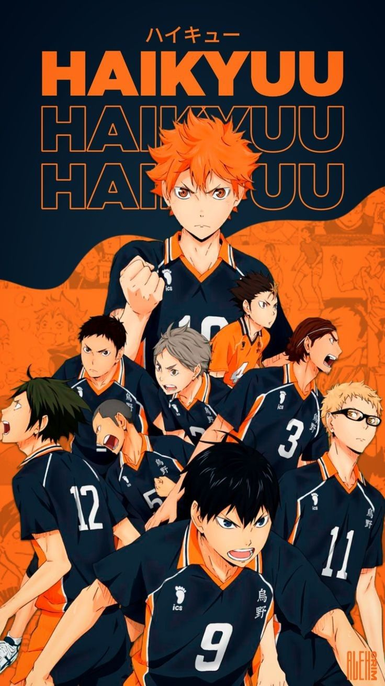
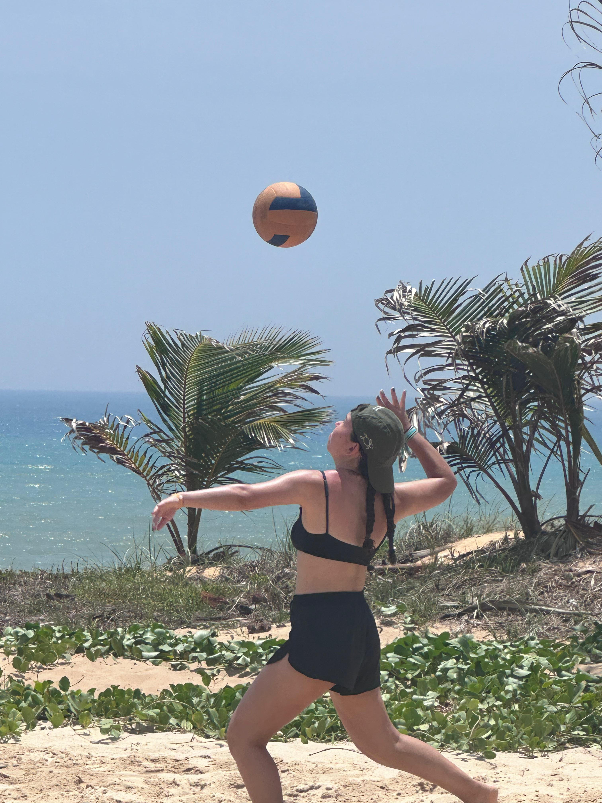
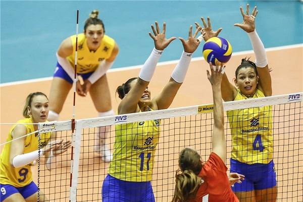
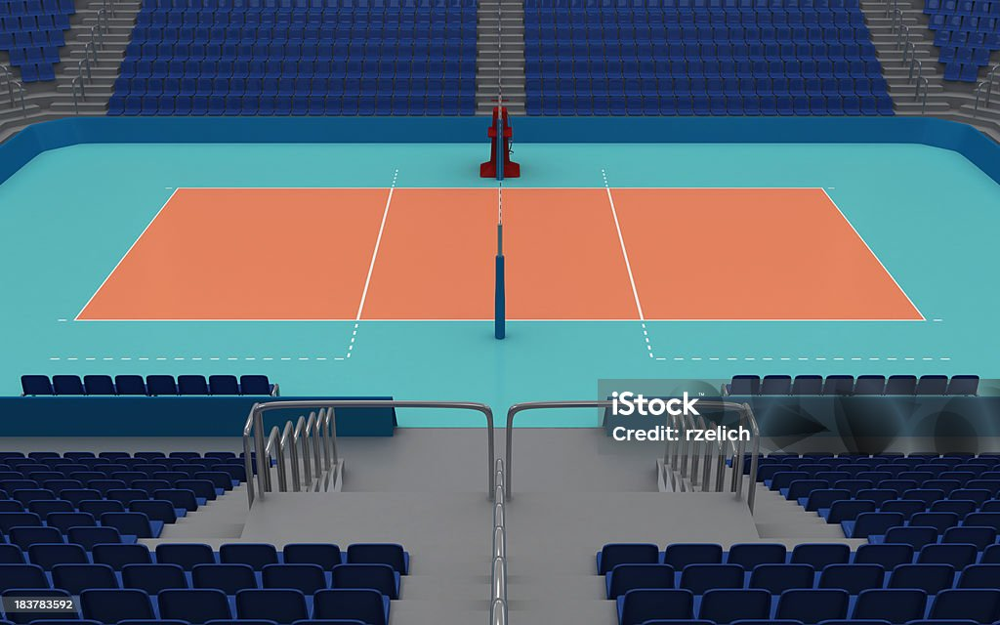

Sobre o Vôlei
O vôlei é um esporte praticado em uma quadra com 7 jogadores (sendo 2 centrais no elenco), mas mantendo 6 em quadra simultaneamente. A regulamentação mundial do esporte é feita pela FIVB.
O voleibol é um esporte jogado por duas equipes numa quadra dividida por uma rede central.
Um momento marcante para o esporte no Brasil ocorreu em , com a conquista do primeiro ouro olímpico feminino.
Fundamentos e Regras
Principais Fundamentos
- Saque (por baixo ou por cima)
- Recepção (Manchete)
- Levantamento
- Toque de dedos
- Levantamento de costas
- Ataque (Cortada)
Ordem de Rotação (Posições em Quadra)
A ordem de rotação é obrigatória e segue o sentido horário:
- Posição 1: Defesa Direita (Saque)
- Posição 6: Defesa Central
- Posição 5: Defesa Esquerda
- Posição 4: Saída de Rede
Alguns significados do Vôlei
- Ace:
- Quando o saque toca diretamente o chão do adversário ou sai após um desvio sem defesa.
- Libero:
- Jogador especialista em defesa que utiliza um uniforme de cor diferente.
- Tie-break:
- O quinto set de desempate, jogado até 15 pontos.
Estatísticas e Conquistas
| Seleção | Ouro | Prata | Bronze |
|---|---|---|---|
| Rússia | 6 | 3 | 3 |
| Brasil | 3 | 3 | 0 |
| Polônia | 3 | 1 | 0 |
| Itália | 4 | 1 | 0 |
Para aprender se divertindo
Uma das formas mais dinâmicas de entender a emoção e a tática do esporte é através do anime Haikyuu!!. A obra foca no crescimento de jogadores que, apesar das limitações físicas, buscam o topo do vôlei escolar japonês.
Você pode conferir mais detalhes sobre a obra nestes links:
- Assista Haikyuu!! na Crunchyroll (Site e Plataforma Oficial)
- Página da Wikipédia sobre a série Haikyuu!!

Imagens


